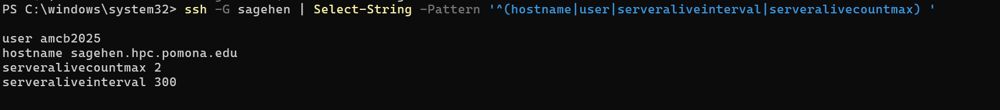

Setting Up SSH Config
Last updated on 2026-08-24 | Edit this page
Overview
Questions
- What SSH configuration do I need for Sagehen?
- How do I set up SSH keys for passwordless authentication?
Objectives
- Configure ~/.ssh/config with proper Sagehen credentials
- Set correct file permissions on SSH files
- Optionally generate SSH keys (Ed25519 recommended)
- Verify SSH connectivity from the terminal
Create or Edit ~/.ssh/config
VS Code Remote-SSH uses your system’s SSH configuration to connect.
You need an entry for Sagehen in ~/.ssh/config.
On Windows (PowerShell):
POWERSHELL
New-Item -ItemType Directory -Force -Path $HOME\.ssh | Out-Null
notepad $HOME\.ssh\configOn Mac/Linux (Terminal):
Add the Sagehen Entry
SSH Configuration for Sagehen
Add this to your ~/.ssh/config (replace
<myusername> with your Pomona username):
Host sagehen
HostName sagehen.hpc.pomona.edu
User username
ServerAliveInterval 300
ServerAliveCountMax 2| Setting | Purpose |
|---|---|
Host sagehen |
Friendly name for the connection |
HostName sagehen.hpc.pomona.edu |
Actual cluster address |
User username |
Your Pomona username |
ServerAliveInterval 300 |
Keep connection alive every 300 seconds |
ServerAliveCountMax 2 |
Disconnect after 2 unanswered keepalives |
Optional: Generate SSH Key
For passwordless connections (DUO still applies), generate an SSH key. Ed25519 is recommended; RSA-4096 is also acceptable.
Generate a key:
Press Enter for default location. You may set a passphrase or leave blank.
Copy to Sagehen (Mac/Linux):
Copy to Sagehen (Windows PowerShell):
Test Your SSH Connection
Before using VS Code Remote-SSH, verify from your terminal:
Expected sequence:
- Password prompt:
<myusername>@sagehen.hpc.pomona.edu's password: - Enter your Pomona password
- DUO prompt appears
- Complete DUO authentication
- You see:
[<myusername>@sagehen-login-1 ~]$
Type exit to disconnect.
If this fails: Check your username in
~/.ssh/config, verify Pomona credentials and DUO
registration, and contact its-hpc@pomona.edu if needed.
Challenge: Verify SSH Configuration
- Open
~/.ssh/configand check the sagehen entry - Run
ssh -G sagehento display your effective SSH configuration - Run
ssh sagehenand complete DUO authentication - Once connected, run
uname -aandwhoami, thenexit
ssh -G sagehen should show:
hostname sagehen.hpc.pomona.edu
user yourname
serveraliveinterval 300
serveralivecountmax 2
ssh -G sagehen filtered through
Select-String.After connecting, uname -a shows a Linux kernel version
and whoami shows your Pomona username. If
whoami returns the wrong name, fix the User
line in ~/.ssh/config. If the connection hangs at the DUO
two-factor login prompt, verify DUO registration.
- Configure ~/.ssh/config with a
Host sagehenentry and your Pomona username - Set proper file permissions (600 for config, 700 for .ssh directory)
- SSH keys (Ed25519 recommended) are optional but convenient for frequent users
- Always test
ssh sagehenfrom a terminal before using VS Code Remote-SSH